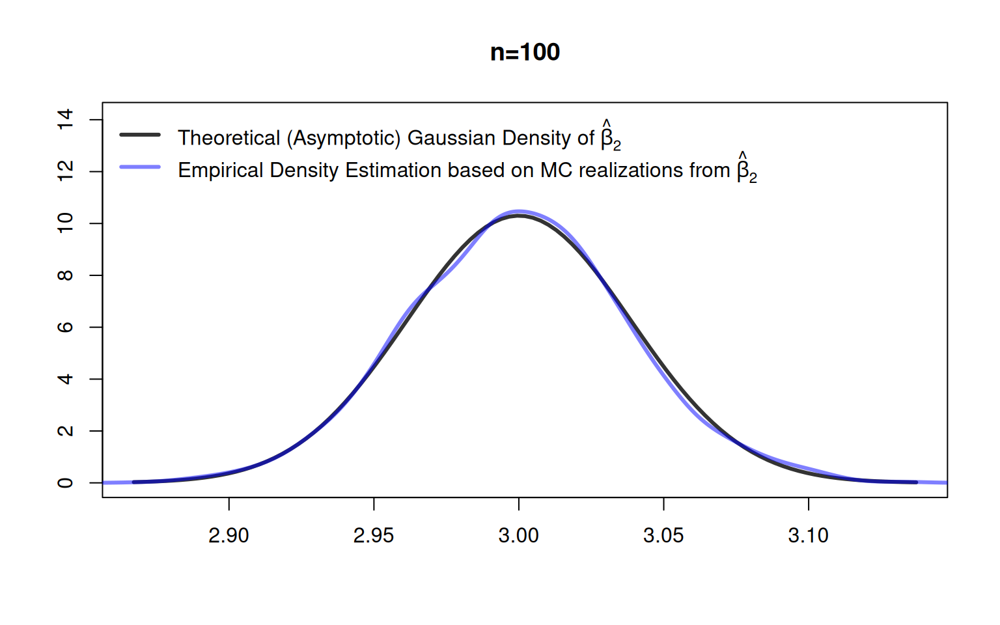
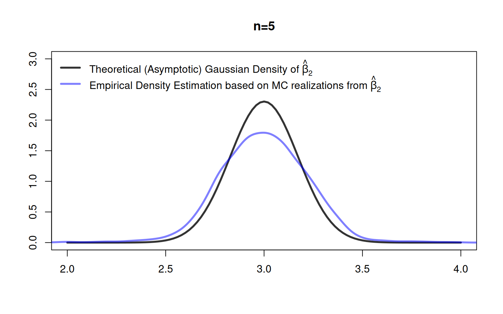

## Function to generate artificial data
myDataGenerator <- function(n, beta){
##
X <- cbind(rep(1, n),
runif(n, -4, 4),
runif(n, -5, 5))
##
eps <- runif(n, min = - 0.5 * abs(X[,2]),
max = + 0.5 * abs(X[,2]))
Y <- X %*% beta + eps
##
data <- data.frame("Y" = Y,
"X_1" = X[,1],
"X_2" = X[,2],
"X_3" = X[,3])
##
return(data)
}7 Large Sample Inference
The content of this chapter is very much inspired by Chapter 2 of the textbook of Hayashi (2000).
7.1 Tools for Asymptotic Statistics
Basically every modern econometric method is justified using the toolbox of asymptotic statistics. The following core concepts from asymptotic statistics will allow us to drop the restrictive normality assumption of Chapter 6 and to introduce robust standard errors:
- Concepts on stochastic convergence
- Continuous mapping theorem
- Slutsky’s theorem
- Law of large numbers
- Central limit theorems
- Cramér-Wold device
7.1.1 Modes of Convergence
In the following we will discuss the four most important convergence concepts for sequences of random variables \[ \{Z_n\}:=(Z_1,Z_2,\dots,Z_n), \] where \[ Z_i,\quad i=1,\dots,n, \] is a uni-variate or multivariate random variable.
Non-random quantities (scalars, vectors or matrices) will be denoted by Greek letters such as \(\alpha\).
Four Important Modes of Convergence
Probably the most often used mode of convergence is convergence in probability. It states that a stochastic sequence \(\{Z_n\}\) concentrates around its limit \(\alpha\) such that deviations \(|Z_n-\epsilon|\) larger than some small \(\epsilon >0\) occur eventually (as \(n\to\infty\)) with probability zero.
In order to show that some stochastic sequence converges in probability to its limit, one typically uses a (weak) law of large numbers.
A stricter mode of convergence is almost sure convergence. Almost sure convergence is (usually) rather hard to derive, since the probability is about an event concerning an infinite sequence. Fortunately, however, there are established strong laws of large numbers that we can use to argue that some stochastic sequence converges almost surely to its limit.
Every sequence that converges almost surely, also converges in probability.
Convergence in mean square is typically the most intuitive mode of convergence. If a stochastic sequence \(\{Z_n\}\) converges to a certain limit \(\alpha,\) then
- the mean of the stochastic sequence \(E(Z_n)\) must converge to the limit \(\alpha,\) and
- the variance of the stochastic sequence \(E(Z_n)\) must converge to zero.
Convergence in mean square is typically easy to show.
Convergence in distribution is the weakest and at the same time most important mode of convergence.
Remarks on Definition 7.4:
- Often you will see statements like \[ Z_n\to_{d} \mathcal{N}(0,1) \] or \[ Z_n\overset{a}{\sim}\mathcal{N}(0,1), \] which should be read as \[ \lim_{n\to\infty}F_n(x) = \Phi(x)\quad\text{for all}\quad x\in\mathbb{R}, \] where \(\Phi\) denotes the distribution function of the standard normal distribution.
- A stochastic sequence \(\{Z_n\}\) can also convergence in distribution to a constant \(\alpha\). In this case \(\alpha\) is treated as a degenerated random variable with cdf \[ F_\alpha(x)=\left\{ \begin{matrix} 0&\text{if}\;\;x <\alpha\\ 1&\text{if}\;\;x\geq\alpha. \end{matrix}\right. \]
By contrast to all other modes of convergence, Definition 7.4 only addresses the univariate case \((Z_n\in\mathbb{R}).\) The reason for this is that Definition 7.4 cannot simply applied element-wise since this would ignore the possible dependencies between the different uni-variate random variables elements of a random vector.
To handle multivariate convergence in distribution, we need the following theorem known as the Cramér-Wold device.
A proof of Theorem 7.1 can be found, e.g., in Billingsley (2008) (p. 383).
The Cramér-Wold theorem (Theorem 7.1) is needed since element-wise convergence in distribution generally does not imply convergence of the joint distribution of \(Z_n\) to the joint distribution of \(Z\); except, if all elements in the random vectors \(Z_n\) and \(Z\) are independent from each other.
Relations among Modes of Convergence
Proofs of the result in Lemma 7.1 can be found, e.g., here: https://www.statlect.com/asymptotic-theory/relations-among-modes-of-convergence
7.1.2 Continuous Mapping Theorem (CMT)
Proofs of Theorem 7.2 can be found, e.g., in Van der Vaart (2000) (see Theorem 2.3) or here: https://www.statlect.com/asymptotic-theory/continuous-mapping-theorem
Note: The CMT does not hold for m.s.-convergence except for the case where \(f\) is a linear function.
Examples: As a consequence of the CMT (Theorem 7.2) we have that the usual arithmetic operations preserve convergence in probability (and equivalently for almost sure convergence and convergence in distribution):
If \(X_n\to_{p} \beta\) and \(Y_n\to_{p} \gamma,\) then \[ X_n+Y_n\to_{p} \beta+\gamma \]
If \(X_n\to_{p} \beta\) and \(Y_n\to_{p} \gamma,\) then \[ X_n\cdot Y_n\to_{p} \beta\cdot\gamma \]
If \(X_n\to_{p} \beta\) and \(Y_n\to_{p} \gamma,\) then \[ X_n/Y_n\to_{p} \beta/\gamma, \] provided that \(\gamma\neq 0\)
If \(\frac{1}{n}\sum_{i=1}^nX_iX_i^{\top}=\frac{1}{n}X_n^{\top}X_n\to_{p} \Sigma_{X^{\top}X},\) then \[ \left(\frac{1}{n}X_n^{\top}X_n\right)^{-1}\to_{p} \Sigma_{X^{\top}X}^{-1}, \] provided \(\Sigma_{X^{\top}X}\) is a nonsingular/invertible matrix.
7.1.3 Slutsky’s Theorem
Slutsky’s Theorem is a collection of results concerned with combinations of
- convergence in probability and
- convergence in distribution.
These results are particularly important for the derivation of the asymptotic distribution of estimators.
Proofs of Theorem 7.3 can be found, e.g., in Van der Vaart (2000) (see Theorem 2.8) or here: https://www.statlect.com/asymptotic-theory/Slutsky-theorem
Remark: Sometimes, only the first two points in Theorem 7.3 are called “Slutsky’s theorem.”
Most important special case of Theorem 7.3:
Let \(\{X_n\}\) and \(\{A_n\}\) be two sequences of real valued \((K\times 1)\)-dimensional random vectors. If \[ X_n\to_{d}\mathcal{N}_K(0,\Sigma)\quad\text{and}\quad A_n\to_{p} A \] then \[ A_nX_n\to_{d}\mathcal{N}_K(0,A\Sigma A^{\top}). \]
7.1.4 Law of Large Numbers and Central Limit Theorems
So far, we discussed the definitions of the four most important convergence modes, their relations among each other, and basic theorems about functionals of stochastic sequences (CMT and Slutsky). Though, we still lack of tools that allow us to actually show that a stochastic sequence convergences (in some of the discussed modes) to some limit.
In the following we consider the stochastic sequences \[ \bar{Z}_1,\bar{Z}_2,\dots,\bar{Z}_n,\quad\text{as}\quad n \to\infty, \] of sample means \[ \bar{Z}_n:=n^{-1}\sum_{i=1}^nZ_i, \] where \(Z_i\), \(i=1,\dots,n\), are (scalar, vector, or matrix-valued) random variables.
Remember: The sample mean \(\bar{Z}_n\) is an estimator of the deterministic population mean \(\mu.\)
Weak Law of Large Numbers (WLLNs), Strong LLNs (SLLNs), and Central Limit Theorems (CLTs) tell us conditions under which arithmetic means \[ \bar{Z}_n=n^{-1}\sum_{i=1}^nZ_i \] converge in probability, almost surely, and in distribution, respectively:
Weak LLN: \(\bar{Z}_n \to_{p}\mu\)
Strong LLN: \(\bar{Z}_n\to_{as}\mu\)
CLT: \(\sqrt{n}(\bar{Z}_n-\mu)\to_{d}\mathcal{N}(0,\sigma^2)\)
In the following we introduce the most well-known versions of a WLLN, SLLN, and a CLT.
A proof of Theorem 7.4 can be found, for instance, here: https://www.statlect.com/asymptotic-theory/law-of-large-numbers
A proof of Theorem 7.5 can be found, e.g., in Linear Statistical Inference and Its Applications, Rao (1973), pp. 112-114.
Note: The WLLN and the SLLN for random vectors follow from applying the the theorem separately for each element of the random vectors.
A proof of Theorem 7.6 can be found, e.g., in Van der Vaart (2000) (see Theorem 2.17).
Using the Cramér-Wold device (Theorem 7.1), the Lindeberg-Levy CLT (Theorem 7.6) can also be applied to \(K\)-dimensional estimators \[ \bar{Z}_n \in\mathbb{R}^K. \]
To show that \[ \sqrt{n}(\bar{Z}_n-\mu)\to_d\mathcal{N}_K(0,\Sigma) \] converges to the multivariate, \(K\)-dimensional, normal distribution \(\mathcal{N}_K(0,\Sigma)\) as \(n\to\infty\), we need to check whether for any \(\lambda\in\mathbb{R}^K\):
- i.i.d.: The univariate stochastic sequence \(\{\lambda^{\top}Z_i\}\) is i.i.d. with
- Mean: \(E(\lambda^{\top}Z_i)=\lambda^{\top}\mu\) for all \(i=1,\dots,n,\) where \(E(Z_i)=\mu\in\mathbb{R}^K\) denotes the \(K\) dimensional mean vector, and
- Variance: \(Var(\lambda^{\top}Z_i)=\lambda^{\top}\Sigma\lambda\) for all \(i=1,\dots,n,\) where \(Var(Z_i)=\Sigma\) denotes the \((K\times K)\) dimensional variance-covariance matrix.
These points are fulfilled if the multivariate stochastic sequence \(\{Z_i\}\) is an i.i.d. sequence with \(E(Z_i)=\mu\) and \(Var(Z_i)=\Sigma.\)
Tip
The LLNs and the CLT are stated with respect to sequences of sample means \(\{\bar{Z}_n\}\); i.e., the simplest estimators you probably can think of. We will see, however, that this is all we need in order to analyze also more complicated estimators such as the OLS estimator.
7.1.5 Estimators: Sequences of Random Variables
The concepts introduced above readily apply to univariate or multivariate (\(K\)-dimensional) estimators \[ \hat\theta_n\equiv\hat\theta((X_1,Y_1),\dots,(X_n,Y_n)) \] which are functions of the random sample with sample size \(n.\)
An increasing sample size \[ n\to\infty \] makes an estimator \[ \{\hat\theta_n\} \] nothing but a sequence of random variables converging (hopefully) to the correct limit; namely, to the parameter value \(\theta\) we aim to estimate.
If an estimator \(\hat\theta_n\) converges in probability to its limit \(\theta\), we call the estimator weakly consistent or simply consistent. If it converges almost surely to \(\theta,\) we call the estimator strongly consistent.
A necessary requirement for weak and strong consistency is that the estimator is asymptotically unbiased.
Tip
If we can show that the MSE of \(\hat\theta_n\) converges to zero, \[ \operatorname{MSE}(\hat\theta_n) \to 0,\quad n\to\infty, \] then we have shown that \(\hat\theta_n\) converges to \(\theta\) in the mean square sense \[ \hat\theta_n \to_{ms} \theta,\quad n\to\infty, \] which implies that \(\hat\theta_n\) is weakly consistent, i.e. \[ \hat\theta_n \to_{p} \theta,\quad n\to\infty. \]
As already discussed in Chapter 4, the MSE of \(\hat\theta_n\) can be decomposed into the squared bias of \(\hat\theta_n\) and the variance of \(\hat\theta_n:\) \[ \begin{align*} \operatorname{MSE}(\hat\theta_n) &=E\Big[(\hat\theta_n-\theta)^2\Big]\\[2ex] &=E\Big[\Big(\overbrace{E(\hat\theta_n) - E(\hat\theta_n)}^{=0} + \hat\theta_n-\theta\Big)^2\Big]\\[2ex] &=E\left[\left((E(\hat\theta_n) -\theta) + (\hat\theta_n - E(\hat\theta_n))\right)^2\right]\\[2ex] &=E\Big[\left(E(\hat\theta_n) -\theta\right)^2 + \left(\hat\theta_n - E(\hat\theta_n)\right)^2\\[2ex] &\quad +2\left(E(\hat\theta_n) -\theta\right)\left(\hat\theta_n - E(\hat\theta_n)\right)\Big]\\[2ex] &=\left(E(\hat\theta_n) -\theta\right)^2 + E\Big[\left(\hat\theta_n - E(\hat\theta_n)\right)^2\Big]\\[2ex] &\quad +2\left(E(\hat\theta_n) -\theta\right)\overbrace{\Big(E(\hat\theta_n) - E(\hat\theta_n)\Big)}^{=0}\\[2ex] %&=\left(E(\hat\theta_n)-\theta\right)^2 + Var(\hat\theta_n)\\ &=\left(\operatorname{Bias}(\hat\theta_n)\right)^2 + Var(\hat\theta_n). \end{align*} \] Thus, to show that an estimator \(\hat\theta_n\) converges in the mean square sense to \(\theta,\) we need to show that:
- The estimator is asymptotically unbiased
\[\begin{align*} \operatorname{Bias}(\hat\theta_n)&\to 0,\quad n\to\infty\\ \Leftrightarrow\quad E(\hat\theta_n)&\to \theta,\quad n\to\infty \end{align*}\] - The variance of the estimator converges to zero \[ Var(\hat\theta_n)\to 0,\quad n\to\infty. \]
7.2 Asymptotics under the Classic Regression Model
Given the above introduced machinery, we can now proof that the two OLS estimators \[ \hat\beta_n=(X^{\top}X)^{-1}X^{\top}Y \] and \[ s^2_{ub,n}=\frac{1}{n-K}\sum_{i=1}^n\hat\epsilon_i^2 \] are both consistent, and that \(\hat\beta_n\) is asymptotically normal distributed.
Using asymptotic statistics, allows us to drop the unrealistic normality and spherical errors assumption (Assumption 4\(^\ast\)) of Chapter 6, but still use our inference tools (\(t\)-tests, \(F\)-tests) from Chapter 6; as long as the sample size \(n\) is “large.”
For the following, it will be useful to introduce some notation that allows us to consider the different parts of the OLS estimator \(\hat\beta_n\) separately.
\[
\begin{align*}
\hat\beta_n
&=\left(X^{\top}X\right)^{-1}X^{\top}Y\\[2ex]
&=\left(\frac{1}{n}X^{\top}X\right)^{-1}\frac{1}{n} X^{\top}Y\\[2ex]
&=\;\;\;\;S_{X^{\top}X}^{-1}\;\;\;\;\frac{1}{n} X^{\top}Y,
\end{align*}
\] where \[
\begin{align*}
\underset{(K\times K)}{S_{X^{\top}X}}
&=\frac{1}{n}X^{\top}X\\[2ex]
&=\frac{1}{n}\sum_{i=1}^nX_iX_i^{\top},
\end{align*}
\] and where the mean of the \((K\times K)\) matrix \(S_{X^{\top}X}\) will be denoted as \[
\begin{align*}
\Sigma_{X^{\top}X}
&=E\left(S_{X^{\top}X}\right)\\[2ex]
&=E\left(\frac{1}{n}X^{\top}X\right)\\[2ex]
&=E\left(\frac{1}{n}\sum_{i=1}^nX_iX_i^{\top}\right)\\[2ex]
&=\frac{n}{n}E\left(X_iX_i^{\top}\right)\\[2ex]
&=E\left(X_iX_i^{\top}\right).
\end{align*}
\] For the below results, we need to restate the full rank assumption (Assumption 3 of Chapter 5) with respect to \(\Sigma_{X^{\top}X}.\)
Assumption 3\(^\ast\): (Population) Rank Condition The \((K\times K)\) matrix \[ \Sigma_{X^{\top}X}=E(S_{X^{\top}X}) \] has full rank \(K\). I.e., \(\Sigma_{X^{\top}X}\) is nonsingular and invertible.
The proof of Theorem 7.7 is done in the lecture.
The proof of Theorem 7.8 is done in the lecture.
Moreover, we can show that the appropriately scaled OLS estimator is asymptotically normal distributed. The following theorem is stated for the simpler homoskedastic case, the heteroskedastic case is presented in Section 7.2.1.
The proof of Theorem 7.9 is done in the lecture.
Theorem 7.9 implies that for spherical errors and for largish sample sizes \(n,\) the OLS estimator \(\beta_n\) is approximately normal distributed, i.e. \[ \begin{align*} \sqrt{n}(\hat\beta_n-\beta)&\overset{a}{\sim}\mathcal{N}_K\left(0,\sigma^2 \Sigma^{-1}_{X^{\top}X}\right)\\[2ex] \Rightarrow\qquad\hat\beta_n &\overset{a}{\sim}\mathcal{N}_K\left(\beta, n^{-1}\sigma^2 \Sigma^{-1}_{X^{\top}X}\right), \end{align*} \] where the approximation error becomes arbitrarily small as \(n\to\infty.\)
Usually, we do not know the asymptotic variance \[
\operatorname{AVar}(\hat\beta_n) = \sigma^2\Sigma_{X^{\top}X}^{-1},
\] and thus have to plug-in the (consistent) estimator
\[
\widehat{\operatorname{AVar}}(\hat\beta_n) = s_{ub}^2 S_{X^{\top}X}^{-1}.
\]
Note: Consistency of \(S_{X^{\top}X}^{-1}\) is provided by Theorem 7.7 and consistency of \(s_{ub}^2\) is provided by Theorem 7.10.
The proof of Theorem 7.10 is skipped, but a detailed proof can be found here: https://www.statlect.com/fundamentals-of-statistics/OLS-estimator-properties
7.2.1 The Case of Heteroskedasticity
Theorem 7.9 can also be stated (and proofed) for conditionally heteroskedastic error terms. In this case, \(\beta_n\) is for large sample sizes \(n\) approximately normal distributed, \[ \begin{align*} \sqrt{n}(\hat\beta_n-\beta)\overset{a}{\sim}\mathcal{N}_K\left(0,\Sigma_{X^{\top}X}^{-1}E(\varepsilon^2_iX_iX_i^{\top})\Sigma_{X^{\top}X}^{-1}\right)\\[2ex] \Rightarrow\qquad\hat\beta_n\overset{a}{\sim}\mathcal{N}_K\left(\beta,n^{-1}\Sigma_{X^{\top}X}^{-1}E(\varepsilon^2_iX_iX_i^{\top})\Sigma_{X^{\top}X}^{-1}\right), \end{align*} \qquad(7.1)\] where the approximation error becomes arbitrarily small as \(n\to\infty.\)
The asymptotic variance (under heteroskedasticity) \[ \begin{align*} \operatorname{AVar}(\hat\beta_n) & = \lim_{n\to\infty}Var(\sqrt{n}(\hat\beta_n-\beta))\\[2ex] & =\underbrace{\Sigma_{X^{\top}X}^{-1}E(\varepsilon_i^2X_iX_i^{\top})\Sigma_{X^{\top}X}^{-1}}_{(K\times K)} \end{align*} \] is, of course, usually unknown and needs to be estimated from the data by some consistent estimator such that \[ S_{X^{\top}X}^{-1}\widehat{E}(\varepsilon^2_iX_iX_i^{\top})S^{-1}_{X^{\top}X}\to_{p} \Sigma_{X^{\top}X}^{-1}E(\varepsilon^2_iX_iX_i^{\top})\Sigma_{X^{\top}X}^{-1} \] as \(n\to\infty.\)
The estimator \[ \widehat{E}(\varepsilon^2_iX_iX_i^{\top}) \] is here a placeholder for one of the existing Heteroskedasticity Consistent (HC) estimators of \(E(\varepsilon^2X_iX_i^{\top})\):
| HC-Type | Formular |
|---|---|
| HC0 | \(\widehat{E}(\varepsilon^2_iX_iX_i^{\top})=\frac{1}{n}\sum_{i=1}^n\hat\varepsilon_i^2X_iX_i^{\top}\) |
| HC1 | \(\widehat{E}(\varepsilon^2_iX_iX_i^{\top})=\frac{1}{n}\sum_{i=1}^n\frac{n}{n-K}\hat\varepsilon_i^2X_iX_i^{\top}\) |
| HC2 | \(\widehat{E}(\varepsilon^2_iX_iX_i^{\top})=\frac{1}{n}\sum_{i=1}^n\frac{\hat{\varepsilon}_{i}^{2}}{1-h_{i}}X_iX_i^{\top}\) |
| HC3 | \(\widehat{E}(\varepsilon^2_iX_iX_i^{\top})=\frac{1}{n}\sum_{i=1}^n\frac{\hat{\varepsilon}_{i}^{2}}{\left(1-h_{i}\right)^{2}}X_iX_i^{\top}\) |
| HC4 | \(\widehat{E}(\varepsilon^2_iX_iX_i^{\top})=\frac{1}{n}\sum_{i=1}^n\frac{\hat{\varepsilon}_{i}^{2}}{\left(1-h_{i}\right)^{\delta_{i}}}X_iX_i^{\top}\) |
HC3 is the most often used HC-estimator.
Tip
The statistic \(h_i:=[P_X]_{ii}\) is called the leverage statistic of \(X_i,\) where
- \(1/n\leq h_i\leq 1\) and
- \(\bar{h}=n^{-1}\sum_{i=1}^nh_i=K/n\).
Observations \(X_i\) with leverage statistics \(h_i\) that greatly exceed the average leverage value \(K/n\) are referred to as “high leverage” observations. High leverage observations \(X_i\) are observations that are far away from all other observations \(X_j\), \(i\neq j=1,\dots,n.\)
High leverage observations \(X_i\) have the potential to distort the estimation results, \(\hat\beta_n\). Indeed, a high leverage observation \(X_i\) will have an distorting effect on the estimation results if the absolute value of the corresponding residual \(|\hat{\varepsilon}_i|\) is unusually large—such observations are called influential outliers. Such observations increase the estimation uncertainty.
General idea of the HC2-HC4 estimators is to increase the estimated variance in order to account for the effects of influential outliers. The residuals \(\hat\varepsilon_i\) belonging to \(X_i\) values that have a large leverage \(h_i\) receive a higher weight and thus increase the value of \(\widehat{E}(\varepsilon^2_iX_iX_i^{\top}).\) This strategy takes into account increased estimation uncertainties due to single influential outliers.
The estimator HC0 was suggested in the econometrics literature by White (1980) and is justified by asymptotic (\(n\to\infty\)) arguments. The estimators HC1, HC2 and HC3 were suggested by MacKinnon and White (1985) to improve the finite sample performance of HC0. Using an extensive Monte Carlo simulation study comparing HC0-HC3, Long and Ervin (2000) concludes that HC3 provides the best overall performance in finite samples. Cribari-Neto (2004) suggested the estimator HC4 to further improve the performance in finite sample behavior, especially in the presence of influential observations (large \(h_i\) values).
Note: Besides Heteroskedasticity Consistent (HC) estimators, there are also Heteroskedasticity and Autocorrelation Consistent (HAC) estimators, as well as estimators that consider clustered covariances. An
Rpackage that provides H(A)C estimators issandwich. For clustered covariances, theclubSandwichpackage can be used.
7.2.2 Robust Inference
7.2.2.1 Robust Hypothesis Testing: Multiple Parameters
Let us reconsider the following system of \(q\)-many null hypotheses: \[ \begin{align*} H_0: \underset{(q\times K)}{R}\underset{(K\times 1)}{\beta} = \underset{(q\times 1)}{r^{(0)}}\\ H_1: \underset{(q\times K)}{R}\underset{(K\times 1)}{\beta} \neq \underset{(q\times 1)}{r^{(0)}}\\ \end{align*} \] where the \((q \times K)\) matrix \(R\) and the \(q\)-vector \(r=(r_{1},\dots,r_{q})^{\top}\) are chosen by the statistician to specify her/his null hypothesis about the unknown true parameter vector \(\beta\). To make sure that there are no redundant equations, it is required that \(\operatorname{rank}(R)=q\).
By contrast to the multiple parameter tests for small samples (see Section 6.2), we can work here with a heteroskedasticity robust test statistic which is applicable for heteroskedastic error terms: \[ \begin{align*} W&=n(R\hat\beta_n - r^{(0)})^{\top}[R\,S_{X^{\top}X}^{-1}\widehat{E}(\varepsilon^2_iX_iX_i^{\top})S^{-1}_{X^{\top}X}\,R^{\top}]^{-1}(R\hat\beta_n-r^{(0)})\\[2ex] W&\overset{H_0}{\to}_d\chi^2(q), \quad\text{as}\quad n\to\infty. \end{align*} \qquad(7.2)\] The price to pay is that the distribution of the test statistic under the null hypothesis is only valid asymptotically; i.e. for large \(n\). That is, the critical values taken from the asymptotic distribution will be useful only for “largish” samples sizes.
In case of homoskedastic error terms, one can substitute \[ S_{X^{\top}X}^{-1}\widehat{E}(\varepsilon^2_iX_iX_i^{\top})S^{-1}_{X^{\top}X} \] by \[ s_{ub}^2S_{X^{\top}X}^{-1}. \]
Finite-sample correction
In order to improve the finite-sample performance of this test, one usually uses the \(F_{q,n-K}\) distribution with \(q\) and \(n-K\) degrees of freedoms instead of the \(\chi^2(q)\) distribution.
Asymptotically (\(n\to\infty\)), \(F_{q,n-K}\) is equivalent to \(\chi^2(q)\). However, for any finite sample size \(n\) (i.e., the practically relevant case) \(F_{q,n-K}\) leads to larger critical values which helps to account for the estimation errors in \(S_{X^{\top}X}^{-1}\widehat{E}(\varepsilon^2_iX_iX_i^{\top})S^{-1}_{X^{\top}X}\) (or in \(s_{ub}^2S_{X^{\top}X}^{-1}\)) which are otherwise neglected by the pure asymptotic perspective.
7.2.2.2 Robust Hypothesis Testing: Single Parameters
Let us reconsider the case of hypotheses about only one parameter \(\beta_k,\) with \(k=1,\dots,K\) \[ \begin{equation*} \begin{array}{ll} H_0: & \beta_k=\beta_k^{(0)}\\ H_1: & \beta_k\ne \beta_k^{(0)}\\ \end{array} \end{equation*} \] Selecting the \(k\)th diagonal element of the test-statistic in Equation 7.2 and taking the square root yields \[ \begin{align*} T&=\frac{\sqrt{n}\left(\hat{\beta}_k-\beta_k^{(0)}\right)}{\sqrt{\left[S_{X^{\top}X}^{-1}\widehat{E}(\varepsilon^2_iX_iX_i^{\top})S^{-1}_{X^{\top}X}\right]_{(k,k)}}} \end{align*} \] where \[ \begin{align*} T&\overset{H_0}{\to}_d\mathcal{N}(0,1),\quad\text{as}\quad n\to\infty, \end{align*} \] and where \[ \left[S_{X^{\top}X}^{-1}\widehat{E}(\varepsilon^2_iX_iX_i^{\top})S^{-1}_{X^{\top}X}\right]_{(k,k)} \] denotes the element in the \(k\)th row and \(k\)th column of the \(K\times K\) matrix \(S_{X^{\top}X}^{-1}\widehat{E}(\varepsilon^2_iX_iX_i^{\top})S^{-1}_{X^{\top}X}.\) This \(t\)-test statistic allows for heteroskedastic error terms.
In case of homoskedastic error terms, one can substitute \[ [S_{X^{\top}X}^{-1}\widehat{E}(\varepsilon^2_iX_iX_i^{\top})S^{-1}_{X^{\top}X}]_{(k,k)} \] by \[ s_{ub}^2[S_{X^{\top}X}^{-1}]_{(k,k)} \] where \([S_{X^{\top}X}^{-1}]_{(k,k)}\) denotes the element in the \(k\)th row and \(k\)th column of the \(K\times K\) matrix \(S_{X^{\top}X}^{-1}.\)
Finite-sample correction
In order to improve the finite-sample performance of this \(t\) test, one usually uses the \(t_{(n-K)}\) distribution with \(n-K\) degrees of freedoms instead of the \(\mathcal{N}(0,1)\) distribution.
Asymptotically (\(n\to\infty\)), \(t_{(n-K)}\) is equivalent to \(\mathcal{N}(0,1)\). However, for finite sample sizes \(n\) (i.e., the practically relevant case) \(t_{n-K}\) leads to larger critical values which helps to account for the estimation errors in \([S_{X^{\top}X}^{-1}\widehat{E}(\varepsilon^2_iX_iX_i^{\top})S^{-1}_{X^{\top}X}]_{(k,k)}\) (or in \(s_{ub}^2[S_{X^{\top}X}^{-1}]_{(k,k)}\)) which are otherwise neglected by the pure asymptotic perspective.
7.2.2.3 Robust Confidence Intervals
Following the derivations in Chapter Section 6.4, but using the expression for the robust standard errors, we get the following heteroskedasticity robust (random) \((1-\alpha)\cdot 100\%\) confidence interval \[ \operatorname{CI}_{1-\alpha}= \left[\hat\beta_k\pm t_{1-\alpha/2,n-K}\sqrt{n^{-1}[S_{X^{\top}X}^{-1}\widehat{E}(\varepsilon^2_iX_iX_i^{\top})S^{-1}_{X^{\top}X}]_{(k,k)}}\right]. \] Here, the coverage probability is an asymptotic coverage probability with \(P(\beta_k\in\operatorname{CI}_{1-\alpha})\to \gamma\) as \(n\to\infty\), where \(\gamma\geq 1-\alpha.\)
7.3 Monte Carlo Simulations
Let’s apply the above asymptotic inference methods using R. As in Chapter Section 6.6 we, first, program a function myDataGenerator() which allows us to generate data from the following model, i.e., from the following fully specified data generating process: \[
\begin{align*}
Y_i &=\beta_1+\beta_2X_{i2}+\beta_3X_{i3}+\varepsilon_i,\qquad i=1,\dots,n\\
\beta &=(\beta_1,\beta_2,\beta_3)^{\top}=(2,3,4)^{\top}\\
X_{i2}&\sim U[-4,4]\\
X_{i3}&\sim U[-5,5]\\
\varepsilon_i|X_i&\sim U[-0.5 |X_{i2}|, 0.5 |X_{i2}|],
\end{align*}
\] where \((Y_i,X_i)\) is assumed i.i.d. across \(i=1,\dots,n\) with \(X_{i2}\) and \(X_{i3}\) being independent of each other.
By contrast to our simulations in Chapter Section 6.6, we consider here a non-Gaussian and heteroskedastic error term \[ Var(\varepsilon_i|X_i)=\frac{1}{12}X_{i2}^2. \]
As a side note: The unconditional variance follows by the law of total variance and is given by \[\begin{align*} Var(\varepsilon_i) &=E(Var(\varepsilon_i|X_i))+Var(E(\varepsilon_i|X_i))\\ &=E\left(\frac{1}{12}X_{i2}^2\right)+0\\ &=\frac{1}{12}\;E\left(X_{i2}^2\right)\\ &=\frac{1}{12}\;Var\left(X_{i2}\right)\quad\text{(since $E(X_{i2}=0)$)}\\ &=\frac{1}{12}\left(\frac{1}{12}(4-(-4))^2\right)=\frac{4}{9}, \end{align*}\] where the last steps follows from applying the variance formula for uniform random variables. The following
R-functionmyDataGenerator()allows us to generate data from the above described data generating processes:
7.3.1 Check: Distribution of \(\hat\beta_n\)
The above data generating process fulfills our regulatory assumptions of this chapter. So, by theory, the estimators \(\hat\beta_k\) should be normal distributed for sufficiently large sample sizes \(n\). \[ \sqrt{n}\left(\hat\beta_{n,k}-\beta_k\right)\to_d\mathcal{N}\left(0,\left[\Sigma_{X^{\top}X}^{-1}E(\varepsilon^2_iX_iX_i^{\top})\Sigma_{X^{\top}X}^{-1}\right]_{(k,k)}\right) \] \[ \Rightarrow\qquad\hat\beta_{n,k}\overset{a}{\sim}\mathcal{N}\left(\beta_k, \;n^{-1}\;\left[\Sigma_{X^{\top}X}^{-1}E(\varepsilon^2_iX_iX_i^{\top})\Sigma_{X^{\top}X}^{-1}\right]_{(k,k)}\right). \]
For our above specified data generating process, we can derive all (usually unknown) population quantities:
From the assumed distributions of \(X_{i2}\) and \(X_{i3}\) we have that: \[ \begin{align*} \Sigma_{X^{\top}X} &=E(S_{X^{\top}X})\\[2ex] &=E(X_iX_i^{\top})\\[2ex] &=\left(\begin{matrix}1&0&0\\0&E(X_{i2}^2)&0\\0&0&E(X_{i3}^2)\end{matrix}\right)\\[2ex] &=\left(\begin{matrix}1&0&0\\0&\frac{16}{3}&0\\0&0&\frac{25}{3}\end{matrix}\right) \end{align*} \] The above result follows from observing that \(E(X^2)=Var(X)\) if \(X\) has mean zero, and that the variance of uniform \(U[a,b]\) distributed random variables is given by \(\frac{1}{12}(b-a)^2\).
Moreover, \[ \begin{align*} E(\varepsilon^2_iX_iX_i^{\top}) & =E(X_iX_i^{\top}E(\varepsilon^2_i|X_i))\\[2ex] & =E\left(X_iX_i^{\top}\left(\frac{1}{12}X_{i2}^2\right)\right) \end{align*} \] such that \[ \begin{align*} E(\varepsilon^2_iX_iX_i^{\top}) &=\left(\begin{matrix}E\left(\frac{1}{12}X_{i2}^2\right)&0&0\\[2ex] 0&E\left(X_{i2}^2\cdot\frac{1}{12}X_{i2}^2\right)&0\\0&0&E\left(X_{i3}^2\cdot\frac{1}{12}X_{i2}^2\right) \end{matrix}\right)\\[2ex] &=\left(\begin{matrix}\frac{1}{12}E\left(X_{i2}^2\right)&0&0\\ 0&\frac{1}{12}E\left(X_{i2}^4\right)&0\\0&0&\frac{1}{12}E\left(X_{i2}^2\right)\,E\left(X_{i3}^2\right) \end{matrix}\right)\\[2ex] &=\left(\begin{matrix}\frac{1}{12}\frac{16}{3}&0&0\\ 0&\frac{1}{12}\frac{256}{5}&0\\ 0&0&\frac{1}{12}\frac{16}{3}\frac{25}{3}\end{matrix}\right)\\[2ex] &=\left(\begin{matrix}\frac{4}{9}&0&0\\0&\frac{64}{15}&0\\0&0&\frac{100}{27}\end{matrix}\right) \end{align*} \] The above result follow from observing that for \(X\sim U[a,b]\) one has \(E(X^k)=\frac{b^{k+1}-a^{k+1}}{(k+1)(b-a)}\), \(k=1,2,\dots\); see, for instance, Wikipedia.
So, for instance, for \(\hat{\beta}_2\) we have the following theoretical large sample distribution: \[ \begin{align} \hat\beta_{n,2}\overset{a}{\sim}&\mathcal{N}\left(\beta_2, \;\frac{1}{n}\;\left[\left(\begin{matrix}1&0&0\\0&\frac{16}{3}&0\\0&0&\frac{25}{3}\end{matrix}\right)^{-1}\left(\begin{matrix}\frac{4}{9}&0&0\\0&\frac{64}{15}&0\\0&0&\frac{100}{27}\end{matrix}\right)\left(\begin{matrix}1&0&0\\0&\frac{16}{3}&0\\0&0&\frac{25}{3}\end{matrix}\right)^{-1}\right]_{22}\right)\\[2ex] \hat\beta_{n,2}\overset{a}{\sim}&\mathcal{N}\left(\beta_2, \;\frac{1}{n}\;\left[ \left( \begin{matrix} 0.444 & 0 &0\\ 0 & 0.15 &0\\ 0&0&0.053 \end{matrix}\right)\right]_{22}\right)\\[2ex] \hat\beta_{n,2}\overset{a}{\sim}&\mathcal{N}\left(\beta_2, \;\frac{1}{n}\;0.15\right) \end{align} \] Let’s use a Monte Carlo simulation to check how well the theoretical large sample (\(n\to\infty\)) distribution of \(\hat\beta_2\) works as an approximative distribution for a practical largish sample size of \(n=100\).
set.seed(123)
n <- 100 # a largish sample size
beta_true <- c(2,3,4) # true data vector
## Mean and variance of the true asymptotic
## normal distribution of beta_hat_2:
# true mean
beta_true_2 <- beta_true[2]
# true variance
var_true_beta_2 <- 0.15 / n
## Let's generate 5000 realizations from beta_hat_2, and check
## whether their distribution is close to the true normal
## distribution.
## (We don't condition on X since the theoretical limit
## distribution is unconditional on X)
rep <- 5000 # MC replications
beta_hat_2 <- rep(NA, times=rep)
##
for(r in 1:rep){
MC_data <- myDataGenerator(n = n,
beta = beta_true)
lm_obj <- lm(Y ~ X_2 + X_3, data = MC_data)
beta_hat_2[r] <- coef(lm_obj)[2]
}
## Compare:
## True beta_2 versus average of beta_hat_2 estimates
c(beta_true_2, round(mean(beta_hat_2), 4))[1] 3.0000 2.9998Good! As expected, the average of the 5000 simulated realizations of \(\hat\beta_2\) is basically equal to the theoretical true mean \(E(\hat\beta_2)=\beta_2=3\) which indicates a bias of zero.
## True variance of beta_hat_2 versus
## empirical variance of beta_hat_2 estimates
c(round(var_true_beta_2, 5), round(var(beta_hat_2), 5))[1] 0.00150 0.00147Great! The variance of the 5000 simulated realizations of \(\hat\beta_2\) is basically equal to the theoretical true variance \(Var(\hat\beta_{n,2})=0.15/n=0.0015\).
## True normal distribution of beta_hat_2 versus
## empirical density of beta_hat_2 estimates
library("scales")
curve(expr = dnorm(x,
mean = beta_true_2,
sd = sqrt(var_true_beta_2)),
xlab = "",
ylab = "",
col = gray(.2), lwd=3, lty=1,
xlim = range(beta_hat_2),
ylim = c(0,14.1),main=paste0("n=",n))
lines(density(beta_hat_2,
bw = bw.SJ(beta_hat_2)),
col = alpha("blue",.5), lwd = 3)
legend("topleft", lty=c(1,1), lwd = c(3,3),
col=c(gray(.2), alpha("blue",.5)), bty="n",
legend=
c(expression(
"Theoretical (Asymptotic) Gaussian Density of"~hat(beta)[2]),
expression(
"Empirical Density Estimation based on MC realizations from"~hat(beta)[2])))
Great! The nonparametric density estimation (estimated via density()) computed from the 5000 simulated realizations of \(\hat\beta_2\) is indicating that \(\hat\beta_2\) is really normally distributed as described by our theoretical results.
However, is the asymptotic distribution of \(\hat\beta_2\) also usable for (very) small samples like \(n=5\)? Let’s check that:
set.seed(123)
n <- 5 # a small sample size
beta_true <- c(2,3,4) # true data vector
## Mean and variance of the true asymptotic
## normal distribution of beta_hat_2:
# true mean
beta_true_2 <- beta_true[2]
# true variance
var_true_beta_2 <- 0.15 / n
## Let's generate 5000 realizations from beta_hat_2, and check
## whether their distribution is close to the true normal
## distribution.
## (We don't condition on X since the theoretical limit
## distribution is unconditional on X)
rep <- 5000 # MC replications
beta_hat_2 <- rep(NA, times=rep)
##
for(r in 1:rep){
MC_data <- myDataGenerator(n = n,
beta = beta_true)
lm_obj <- lm(Y ~ X_2 + X_3, data = MC_data)
beta_hat_2[r] <- coef(lm_obj)[2]
}
## Compare:
## True beta_2 versus average of beta_hat_2 estimates
c(beta_true_2, round(mean(beta_hat_2), 4))[1] 3.0000 2.9963OK, at least on average the 5000 simulated realizations of \(\hat\beta_2\) are basically equal to the true mean \(E(\hat\beta_2)=\beta_2=3\).
## True variance of beta_hat_2 versus
## empirical variance of beta_hat_2 estimates
c(round(var_true_beta_2, 4), round(var(beta_hat_2), 4))[1] 0.0300 0.0562Ouch! The theoretical variance \(Var(\hat\beta_2)=0.15/n=0.03\) is about 50% smaller than the actual (small sample) variance of \(\hat\beta_2\) approximated by the empirical variance of the 5000 simulated realizations of \(\hat\beta_2\). That is, we cannot simply use a large sample result in small samples.
Reason: In small samples, the Law of Large Numbers has not kicked in yet; therefore, we cannot neglect the variability in the sample statistic \(S_{X^{\top}X}^{-1}.\)
This issue can also seen when comparing the theoretical large sample distribution of \(\hat\beta_2\) with an estimate of the actual finite-sample distribution of \(\hat\beta_2.\)
## True normal distribution of beta_hat_2 versus
## empirical density of beta_hat_2 estimates
library("scales")
curve(expr = dnorm(x,
mean = beta_true_2,
sd = sqrt(var_true_beta_2)),
xlab = "",
ylab = "",
col = gray(.2), lwd = 3, lty = 1,
xlim = c(2,4),
ylim = c(0,3), main=paste0("n=",n))
lines(density(beta_hat_2,
bw = bw.SJ(beta_hat_2)),
col = alpha("blue",.5), lwd = 3)
## Legend
legend("topleft", lty=c(1,1), lwd=c(3,3),
col=c(gray(.2), alpha("blue",.5)), bty="n",
legend=
c(expression(
"Theoretical (Asymptotic) Gaussian Density of"~hat(beta)[2]),
expression(
"Empirical Density Estimation based on MC realizations from"~
hat(beta)[2]))) 
Not good. The actual finite-sample distribution has substantially fatter tails. That is, if we would use the quantiles of the asymptotic distribution, we would falsely reject the null-hypothesis too often (probability of type I errors would be larger than the significance level).
Fortunately, asymptotics are usually kicking in relatively fast; here, things become much more reliable already for \(n\geq 15\).
7.3.2 Check: Testing Multiple Parameters
In the following, we do inference about multiple parameters. We test the (here correct) null hypothesis \[\begin{align*}
H_0:\;&\beta_2=3\quad\text{and}\quad\beta_3=4\\
\text{versus}\quad H_1:\;&\beta_2\neq 3\quad\text{and/or}\quad\beta_3\neq 4.
\end{align*}\] Or equivalently \[\begin{align*}
H_0:\;&R\beta -r^{(0)} = 0 \\
H_1:\;&R\beta -r^{(0)} \neq 0,
\end{align*}\] where \[
R=\left(
\begin{matrix}
0&1&0\\
0&0&1\\
\end{matrix}\right)\quad\text{ and }\quad
r^{(0)}=\left(\begin{matrix}3\\5\\\end{matrix}\right).
\] The following R code can be used to test this hypothesis. Note that we use HC3 robust variance estimation sandwich::vcovHC(lm_obj, type="HC3") to take into account that the error terms are heteroskedastic.
suppressMessages(library("car")) # for linearHyothesis()
# ?linearHypothesis
library("sandwich") # for vcovHC(), robust variance estimations
set.seed(1009)
## Generate data
MC_data <- myDataGenerator(n = 100,
beta = beta_true)
## Estimate the linear regression model parameters
lm_obj <- lm(Y ~ X_2 + X_3, data = MC_data)
vcovHC3_mat <- sandwich::vcovHC(lm_obj, type="HC3")
## Option 1:
# car::linearHypothesis(model = lm_obj,
# hypothesis.matrix = c("X_2=3", "X_3=4"),
# vcov = vcovHC3_mat)
## Option 2:
R <- rbind(c(0,1,0),
c(0,0,1))
car::linearHypothesis(model = lm_obj,
hypothesis.matrix = R,
rhs = c(3,4),
vcov = vcovHC3_mat)Linear hypothesis test
Hypothesis:
X_2 = 3
X_3 = 4
Model 1: restricted model
Model 2: Y ~ X_2 + X_3
Note: Coefficient covariance matrix supplied.
Res.Df Df F Pr(>F)
1 99
2 97 2 0.032 0.9685The large \(p\)-value does not allow us to reject the null-hypothesis at any of the usual significance levels. This is good, since we test here a correct null-hypothesis and rejecting it would mean to do a false rejection (type I error, false positive).
On average, however, there will be some false rejections of the null-hypothesis, but this type I error rate needs to be samler or equal to \(\alpha\).
set.seed(1110)
B <- 10000
p_values <- numeric(B)
for(r in 1:B){
MC_data <- myDataGenerator(n = 100, beta = beta_true)
lm_obj <- lm(Y ~ X_2 + X_3, data = MC_data)
vcovHC3_mat <- sandwich::vcovHC(lm_obj, type="HC3")
Ftest <- car::linearHypothesis(model = lm_obj,
hypothesis.matrix = c("X_2=3", "X_3=4"),
vcov = vcovHC3_mat)
p_values[r] <- Ftest$'Pr(>F)'[2]
}
## Nominal type I error rate
alpha <- 0.05
## Empirical type I error rate
length(p_values[p_values < alpha])/B[1] 0.0562This is more or less ok, but you see that the upper bound is not so strict here as it was in the small sample inference case in Section 6.6. A larger sample size \(n\geq 100\) would improve this simulation result.
7.3.3 Check: Testing Single Parameters
Next, we do inference about a single parameter. We test \[\begin{align*} H_0:&\beta_3=5\\ \text{versus}\quad H_1:&\beta_3\neq 5. \end{align*}\]
# Load libraries
suppressMessages(library("lmtest")) # for coeftest()
## Generate data
n <- 100
MC_data <- myDataGenerator(n = n,
beta = beta_true)
## Estimate the linear regression model parameters
lm_obj <- lm(Y ~ X_2 + X_3, data = MC_data)
## Robust t test
## Robust standard error for \hat{\beta}_3:
SE_rob <- sqrt(vcovHC(lm_obj, type = "HC3")[3,3])
## hypothetical (H0) value of \beta_3:
beta_3_H0 <- 4
## estimate for beta_3:
beta_3_hat <- coef(lm_obj)[3]
## robust t-test statistic
t_test_stat <- (beta_3_hat - beta_3_H0)/SE_rob
## p-value
K <- length(coef(lm_obj))
##
p_value <- 2 * min( pt(q = t_test_stat, df = n - K),
1- pt(q = t_test_stat, df = n - K))
p_value[1] 0.5234886Agian, the large \(p\)-value does not allow us to reject the (here true) null-hypothesis at any of the usual significance levels. Let us check the empirical type I error rate.
set.seed(1009)
n <- 100
B <- 10000
p_values <- numeric(B)
for(r in 1:B){
MC_data <- myDataGenerator(n = n, beta = beta_true)
lm_obj <- lm(Y ~ X_2 + X_3, data = MC_data)
SE_rob <- sqrt(vcovHC(lm_obj, type = "HC3")[3,3])
beta_3_hat <- coef(lm_obj)[3]
## robust t-test statistic
t_test_stat <- (beta_3_hat - beta_3_H0)/SE_rob
p_values[r] <- 2 * min( pt(q = t_test_stat, df = n - length(beta_true)),
1- pt(q = t_test_stat, df = n - length(beta_true)))
}
## Nominal type I error rate
alpha <- 0.05
## Empirical type I error rate
length(p_values[p_values < alpha])/B[1] 0.0496Good! The empirical type I error rate is bounded from above by the nominal type I error rate \(\alpha\).
7.4 Real Data Example
In the following, we revisit the read data study from Section 6.7. Now, we have the tools to allow for heteroskedastic and non-Gaussian errors.
## The AER package contains a lot of datasets
suppressPackageStartupMessages(library(AER))
## Attach the DoctorVisits data to make it usable
data("DoctorVisits")
lm_obj <- lm(visits ~ gender + age + income, data = DoctorVisits)The above R codes re-estimate the following regression model \[
Y_i = \beta_1 + \beta_{gender} X_{gender,i}
+ \beta_{age} X_{age,i}
+ \beta_{income} X_{income,i} + \varepsilon_i,
\] where \(i=1,\dots,n\) and
- \(X_{gender,i}=1\) if the \(i\)th subject is a woman and \(X_{gender,i}=0\) if the \(i\)th subject is a man
- \(X_{age,i}\) is the age of subject \(i\) measured in years divided by \(100\)
- \(X_{income,i}\) is the annual income of subject \(i\) in tens of thousands of dollars
Now, to do heteroskedasticity consistent robust inference, one can use the vcocHV() frunction from the R package sandwich together with the coeftest() function from the R package lmtest.
## No robust standard errors:
coeftest(lm_obj)
t test of coefficients:
Estimate Std. Error t value Pr(>|t|)
(Intercept) 0.153710 0.036069 4.2616 2.066e-05 ***
genderfemale 0.062446 0.023455 2.6624 0.007782 **
age 0.402355 0.057131 7.0427 2.132e-12 ***
income -0.082306 0.031670 -2.5989 0.009380 **
---
Signif. codes: 0 '***' 0.001 '**' 0.01 '*' 0.05 '.' 0.1 ' ' 1
t test of coefficients:
Estimate Std. Error t value Pr(>|t|)
(Intercept) 0.153710 0.034351 4.4747 7.815e-06 ***
genderfemale 0.062446 0.024582 2.5403 0.01110 *
age 0.402355 0.060304 6.6721 2.785e-11 ***
income -0.082306 0.032321 -2.5465 0.01091 *
---
Signif. codes: 0 '***' 0.001 '**' 0.01 '*' 0.05 '.' 0.1 ' ' 1You can do this also using the R package stargazer which gives you (almost) puplication ready regression output tables. The following R code produced two regression outputs—one without and one with robust standard errors:
suppressPackageStartupMessages(library("stargazer"))
# Adjust standard errors
cov_beta_HC3 <- vcovHC(lm_obj, type = "HC3")
robust_HC3_se <- sqrt(diag(cov_beta_HC3))
# Stargazer output (with and without RSE)
stargazer(lm_obj, lm_obj,
se = list(NULL, robust_HC3_se),
column.labels = c("", "Robust SE"),
type = "html") # alternatively: type = "text" or type = "latex"| Dependent variable: | ||
| visits | ||
| Robust SE | ||
| (1) | (2) | |
| genderfemale | 0.062*** | 0.062** |
| (0.023) | (0.025) | |
| age | 0.402*** | 0.402*** |
| (0.057) | (0.060) | |
| income | -0.082*** | -0.082** |
| (0.032) | (0.032) | |
| Constant | 0.154*** | 0.154*** |
| (0.036) | (0.034) | |
| Observations | 5,190 | 5,190 |
| R2 | 0.019 | 0.019 |
| Adjusted R2 | 0.018 | 0.018 |
| Residual Std. Error (df = 5186) | 0.791 | 0.791 |
| F Statistic (df = 3; 5186) | 33.218*** | 33.218*** |
| Note: | p<0.1; p<0.05; p<0.01 | |
7.5 Exercises
References
Billingsley, Patrick. 2008. Probability and Measure. John Wiley & Sons.
Cribari-Neto, Francisco. 2004. “Asymptotic Inference Under Heteroskedasticity of Unknown Form.” Computational Statistics & Data Analysis 45 (2): 215–33.
Hayashi, Fumio. 2000. Econometrics. Princeton University Press.
Long, J Scott, and Laurie H Ervin. 2000. “Using Heteroscedasticity Consistent Standard Errors in the Linear Regression Model.” The American Statistician 54 (3): 217–24.
MacKinnon, James G, and Halbert White. 1985. “Some Heteroskedasticity-Consistent Covariance Matrix Estimators with Improved Finite Sample Properties.” Journal of Econometrics 29 (3): 305–25.
Van der Vaart, Aad W. 2000. Asymptotic Statistics. Vol. 3. Cambridge university press.
White, Halbert. 1980. “A Heteroskedasticity-Consistent Covariance Matrix Estimator and a Direct Test for Heteroskedasticity.” Econometrica, 817–38.